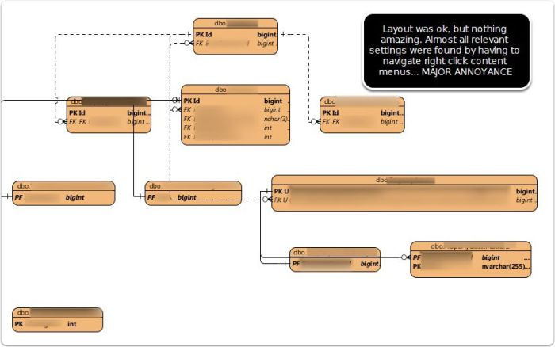
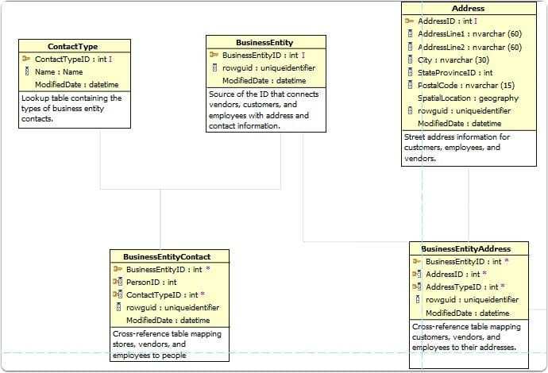
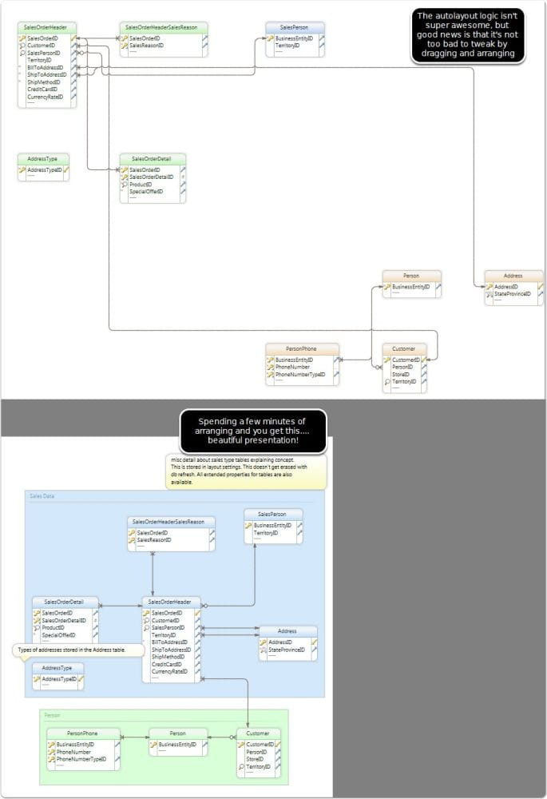

Don't get too excited. I know you love documentation, and just can't wait to spend some time digging in to document your database thoroughly. I imagine you probably want to build visio charts manually, or draw whiteboard diagrams by hand and take pictures.
For the rest of us that are lazy, a tool to help document your database is a great idea. I'm a big fan of SQL Doc by Red Gate, and ApexSQL Doc . I ended up using ApexSQL doc to document the database at my work, though Red Gates is also a great option. Both provide a great schema documentation tool that can generate a helpful CHM file to browse through (which I much prefer to trying to sort through PDF/WORD docs)
However, there is one thing that I was recently tasked with that made me appreciate a little more hands on documentation. In the case that you are deploying an application or any set of tables/structure that might end up being used by someone else, describing your data model can be a really helpful resource to someone trying to query or implement some custom implementation against your data. This might be helping document some data structures for someone building a report, or even developers trying to leverage some of the data in a separate implementation.
Understanding the data model as a dba/dev is important to being able to architect improvements as well, so I've found that going through and diagramming some of the logical structures/groupings can be a tremendous benefit to better understanding a database that perhaps you didn't architect from scratch, or has legacy results.
Some positives I see:
- Forces a better understanding of how your data model is constructed
- Can help highlight weaknesses and flaws in your data model
- Can help explain the data model to folks who may not be living and breathing your business, so if terminology and fields sometimes are confusing on how things relate, the data model can help clarify some of these things.
Some negatives:
- Requires a little elbow grease
- You'll find things to fix
Visio 2010 is the last Visio version that provides the capability to reverse engineer a database into a diagram. This is unfortunate. I worked for a while with this, but ended up shelving Visio as a long term option because of it's unintuitive nature, and behavior at times. For example, refreshing your database schema to identify changes wouldn't help flag any new changes, you'd have tables that were in several diagrams suddenly being given new table names like TableTest, TableTest1, TableTest2, instead of reusing the same table in the model. Also, the layout and arrangement can be pretty messy at times. Working with data sources requires you to use GENERIC OLEDB from what I recall, otherwise I got errors using SQL 2014. Lots of little things that added up to a poor experience.
Gave it the old college try.... not worth it in my personal opinion
Visual Paradigm Gallery
This tool has some amazing functionality, but unfortunately was very tedious and complex for the purposes of documenting an existing database. I think this aspect of Visual Paradigm's reverse database toolset needs some major productivity and UI tweaks to be usable. It may be great for someone working with diagrams for creating databases and models, but for a SQL dba working to document their database better, it wasn't a great option.
Even though very unintuitive, I did like the customization options for layout and the arrangement. The problem was none of the changes performed in realtime, thereby making it an annoying guesswork game. Not a huge fan. Also, very difficult to easily identify tables that had related tables to add with a click, so not easy to navigate all the tables and related tables in an intuitive way.
Not a big fan of having to tweak 10 settings via 10 trips to a right click context menu. Their presentation workflow needs some major improvements.

DbVisualizer
By far the best auto arranging layout tool I found. Amazing. It uses yEd as the backbone of the diagramming, so I also downloaded yEd, but for me to utilize, I'll definitely have to play around as the engine is powerful, but would take programming to get it to do anything similar to what DbVisualizer accomplished. It's more of an exploratory tool than a documenting one, but you can save the graph to .gml format and open in yEd to change. A little extra work, but possible if you like the results. It doesn't display foreign key columns, so it's more of looking at the referring/relationship side of things, without a full column list.
I'm pretty much sold that this is bar none the best auto-laid out representation of tables I've ever seen with any tool. I'll be keeping the free DbVisualizer as a tool for reviewing adhoc data models for sure!
The negative for documentation purposes is that none of these graphs are saved, so it's good for adhoc or one time, but not to regenerate.

They have a great output, but unfortunately they don't allow you to only show key columns, therefore your diagrams get pretty bloated. It's pricey, has some great other features, and I'd be a big fan, except the diagramming options aren't as robust as the others for customization. If you are documenting a data model, I like to only show key columns (PK/FK) to ensure there is not excessive noise.
I did reach out to company on this option, and they said:
"You can't show the PK and FK without the entity. So, you can't show them be themselves."
The lack of any extra options to submit feedback, or anything as a potential buyer put me off to this product for now.

- Oracle SQL Developer - very difficult to get the SQL connection up and running. Not unintuitive, not visually pleasing output
- Toad Data Modeler - same as above. Not visualizer pleasing, too many steps. Targeted at design rather than documentation.
- ERStudio... didn't even consider, much too pricey for documentation purposes
- SQL Architect - much too unintuitive and complex
DBSchema
This is the winner. I switched all our diagrams over to this tool.
A few major pros:
- All diagrams saved as "layouts" in your project. This means I can come back at anytime and fix/tweak.
- I can refresh the database schema imported and it will flag all the changes, and then the diagrams will automatically get updated.
- It generates really nice HTML interactive documentation. Major win!
The major pro I found for this is with a little upfront work in arranging better, I could refresh all diagrams (maybe a new fk gets added), and then bulk export all these as HTML interactive database diagrams with full detail. You can hover over the FK lines and it will highlight the relationship etc. This is great for usability! Also, removes a lot of manual work in refreshing database column diagrams if something gets added/changed.
One of the most significant points to this tool is the functionality + price! The price for a commercial licenses is extremely reasonable (as of 2015-12-09 the pricing was under $200)
Some things that could use improvement:
- Improved autoarrangement - Allow preset option of only showing FK/PK ( i have an autohotkey script I built to do this, contact me if you want it, helped simplify)
- Allow optional layouts like Tree, Hierarchical
